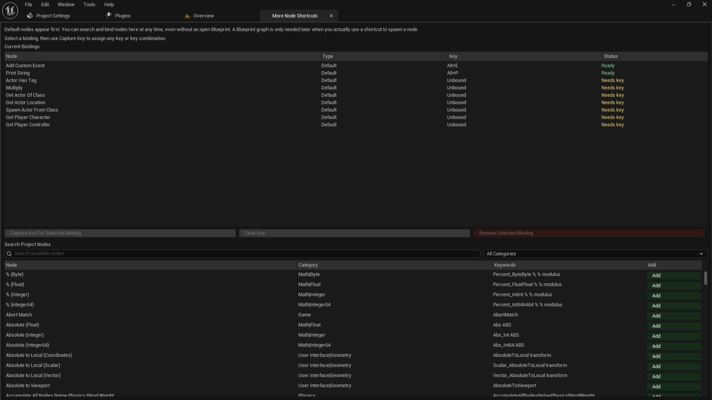
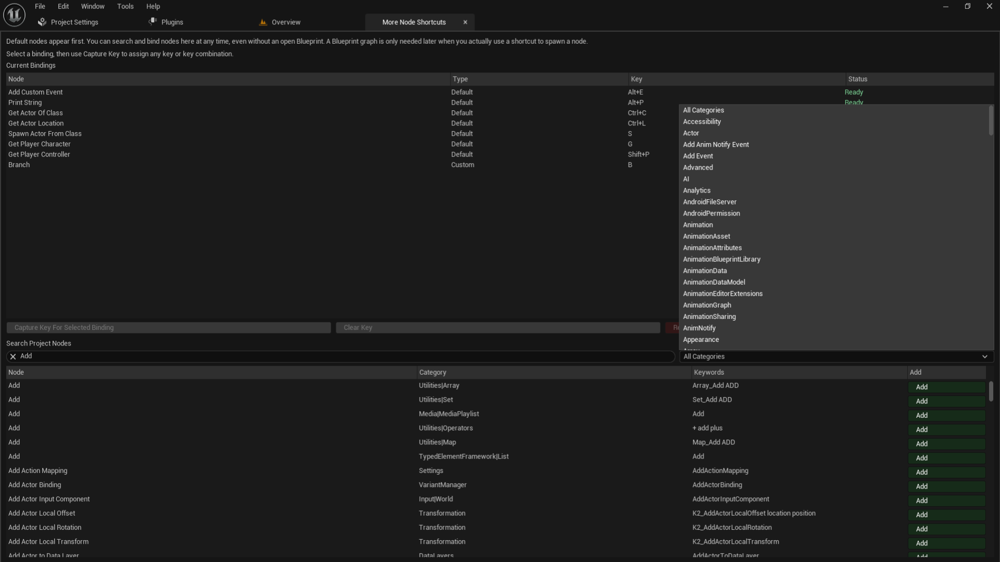
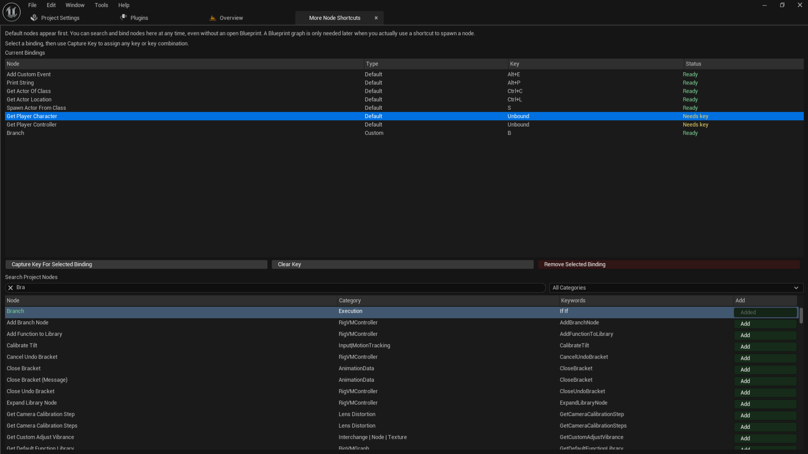
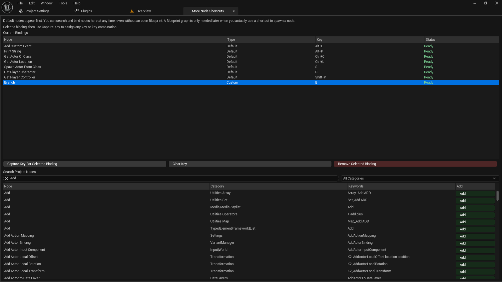
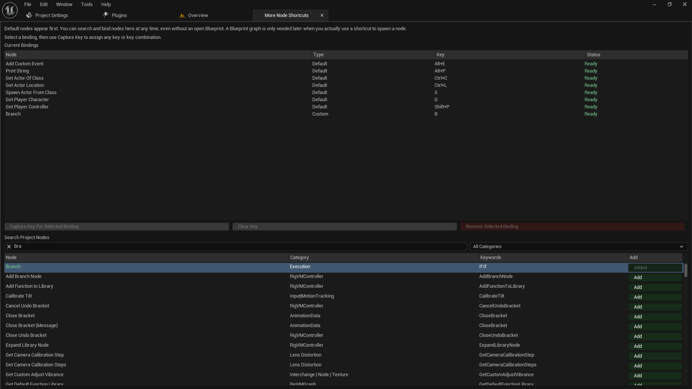
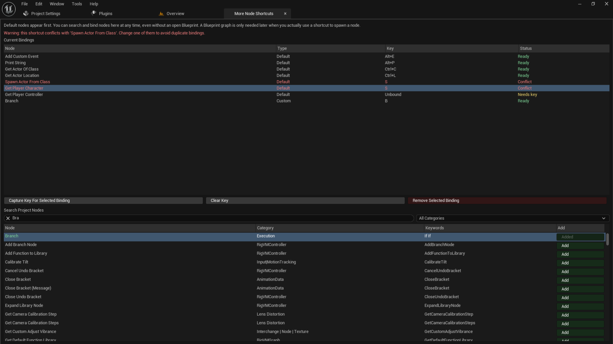

More Node Shortcuts is an editor plugin for Unreal Engine that drastically speeds up Blueprint workflows. It allows you to assign custom keyboard shortcuts to any Blueprint node, enabling you to spawn nodes directly into the active graph without opening the right-click context menu.
Requirements
- Engine Version: Unreal Engine 5.6
- Platform: Windows (Editor Build)
Installation
- Place the
MoreNodeShortcuts plugin folder inside your project's Plugins folder (create the folder if it doesn't exist).
- Open your Unreal Engine project.
- If Unreal prompts you to build missing modules, click Yes to allow the plugin to build.
- Ensure the plugin is enabled by navigating to Edit > Plugins and searching for "More Node Shortcuts".
Accessing the Plugin
To open the binding manager window, navigate to the top menu bar:
Tools > More Node Shortcuts
This opens the main manager window where you can search for nodes, create bindings, assign shortcuts, and review any key conflicts.

📸 1.png (Main Plugin Window)
Save index.html in the same folder as your images to view this. '">
Core Features & Workflow
1. Searching and Adding Nodes
The Search Project Nodes section at the bottom of the window allows you to find and add any available Blueprint node to your shortcut list.
- Search Bar: Supports direct node names, partial matches, and keywords (e.g.,
print string, do once, bool and, multiply).
- Category Filter: Use the dropdown menu on the right to narrow down nodes by specific Engine or Project categories.

📸 5.png (Category Filtering)
Save index.html in the same folder as your images to view this.'">
Once you find the node you want (for example, the Branch node), click the Add button next to it. The button will turn dark green and say Added.

📸 2.png (Adding a Node)
Save index.html in the same folder as your images to view this.'">
2. Assigning Shortcuts
After adding a node, it will appear in the Current Bindings list at the top. To assign a shortcut:
- Click on the binding in the list to select it (it will highlight in blue).

📸 6.png (Selecting a Binding)
Save index.html in the same folder as your images to view this.'">
- Click the Capture Key For Selected Binding button.
- Hold any modifier keys (Ctrl, Alt, Shift) you wish to use, and press your desired key (e.g.,
B).
Once assigned, the shortcut will immediately update. If successful, the Status column will display Ready in green.

📸 4.png (Successful Binding)
Save index.html in the same folder as your images to view this.'">
3. Spawning Nodes in Blueprints
With your shortcuts assigned, you can now place nodes instantly:
- Open any Blueprint graph.
- Ensure the graph window is focused.
- Left-click in the graph while holding your assigned shortcut key combination.
Note: If multiple Blueprint editors are open, the plugin targets the most recently active one.
4. Drag-From-Pin Workflow (Auto-Connect)
The plugin fully supports spawning nodes while dragging from an existing Blueprint pin or wire:
- Drag a wire from an execution pin or value pin.
- Trigger the shortcut for your desired node.
- The plugin will spawn the node and attempt to automatically connect it to the dragged pin.
Auto-connection depends on node compatibility and pin types (e.g., using a shortcut for a Math node while dragging from a Float pin).
Managing Bindings
The Current Bindings section displays all default and custom setups. Pay attention to the Status column:
- Ready (Green): The shortcut is assigned and ready to use.
- Needs Key (Yellow): The node is in your list but has no assigned shortcut. Select it and use the Capture button to assign one.
- Conflict (Red): Multiple nodes share the exact same shortcut key. Shortcuts will not work while in conflict.
Included Default Bindings
To get you started, the plugin includes a set of common default bindings. Some come pre-assigned, while others are blank and waiting for your preferred key:
- Add Custom Event:
Alt + E
- Print String:
Alt + P
- Unbound Defaults (Needs Key): Actor Has Tag, Multiply, Get Actor Of Class, Get Actor Location, Keyboard Event, Spawn Actor From Class, Get Player Character, Get Player Controller, Lerp (Float/Vector/Rotator/Transform/Color).
Troubleshooting
The shortcut is marked as a "Conflict"
If you assign a shortcut that is already in use, the row will turn red, and a warning will appear at the top of the window. Select one of the conflicting bindings, click Clear Key, and capture a new, unique key combination.

📸 3.png (Conflict Warning)
Save index.html in the same folder as your images to view this.'">
The plugin opens, but shortcuts do not place nodes
Verify the following:
- A Blueprint graph is currently open and the window is focused.
- The binding's status is Ready (not "Needs Key" or "Conflict").
A node does not auto-connect while dragging from a pin
This usually means the pin types are incompatible with the node you are spawning, or the node does not natively support autowiring in that specific context.
I can't find a specific node in the search
Try using fewer words or simpler keyword queries (like add, multiply, or multi gate). If the list is too long, use the Category dropdown to filter the results.
×